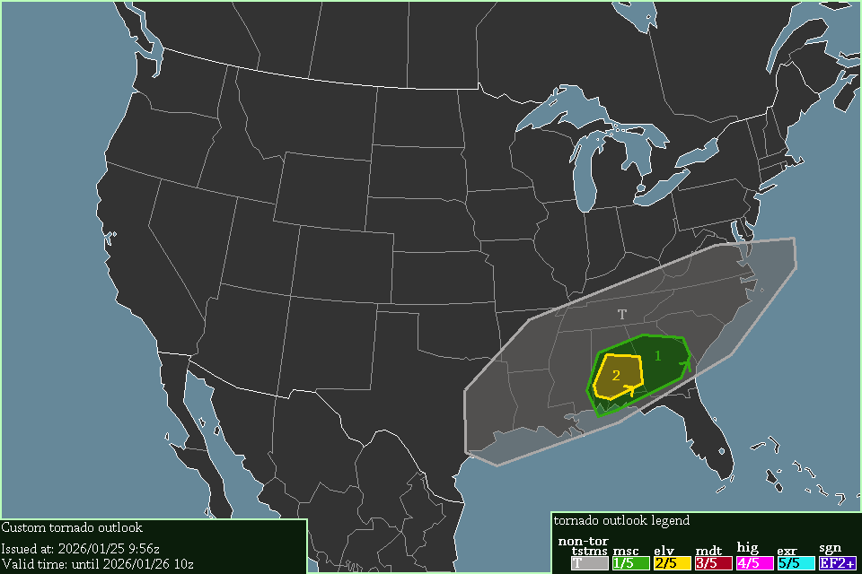

A level 2 elevated risk exists in southern Alabama, starting at 14:00 UTC, 2026/01/25.
Thunderstorms are expected surrounding the Elevated risk & into eastern Texas & Virginia, starting now.
Severe thunderstorms will move through Dixie-Alley. Several ingredients are in place for tornadoes, such as 0-1km SRH of 200 m²/s² across Alabama & Georgia & a jet-translation-speed of 55 knots. STP values of 2-3 in southern Alabama indicate tornadoes are likely. I would not say significant tornadoes are possible, but neither would I say they are not possible.
-- Cenn Devel, 2026/01/25 9:56z.